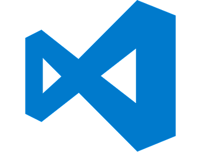

LearNux


Recommended Apps

A powerful, free code editor made by Microsoft that has become the most widely used development environment on Linux. It supports virtually every programming language through its massive extension marketplace, offers built-in Git integration, intelligent code completion, debugging tools, and a fully customisable interface. Available as a Snap or DEB package directly from Microsoft's repository.
1. Go to "code.visualstudio.com".

2. Click the "Download" button, and select .deb file.

3. After the file has been downloaded, go to software applications and open "Terminal".